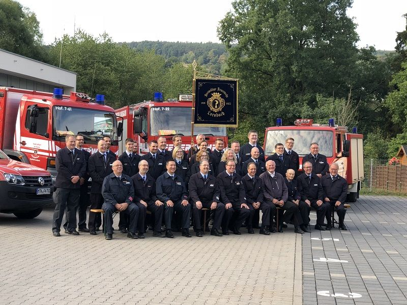
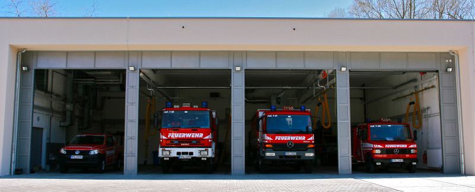
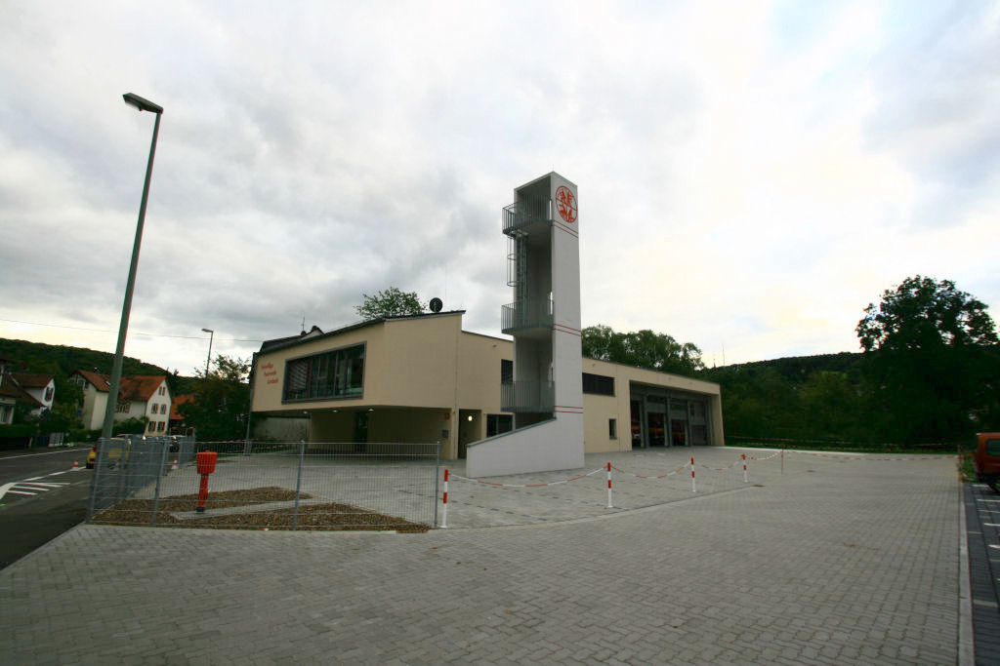

Kinderfeuerwehr Löschtiger
6–9 Jahre
Spielerisch die Feuerwehr kennenlernen, mit eigener Löschkarre.
Jeden zweiten Samstag, 16 Uhr
Freiwillige Feuerwehr Hofheim-Lorsbach
Seit 1902 rücken Lorsbacherinnen und Lorsbacher aus, wenn ihre Nachbarn Hilfe brauchen: bei Bränden, Unfällen, Sturm und Hochwasser, im Wald und am Kletterfelsen. Ehrenamtlich, rund um die Uhr.

Mitmachen
Schauen Sie einfach zu den Übungszeiten im Feuerwehrhaus vorbei. Vorkenntnisse braucht niemand.
6–9 Jahre
Spielerisch die Feuerwehr kennenlernen, mit eigener Löschkarre.
Jeden zweiten Samstag, 16 Uhr
10–17 Jahre
Übungen, Teamarbeit, Zeltlager und der 24-Stunden-Berufsfeuerwehrtag.
Dienstags, 18–20 Uhr (Schulzeit)
ab 17 Jahren
Mehr als ein Hobby: Menschen retten, Brände löschen, technische Hilfe leisten.
Montags ab 19 Uhr
ab 10 € im Jahr
Unterstützen Sie Ausrüstung und Ausbildung, die der Haushalt nicht abdeckt.
Jederzeit, per Mitgliedsantrag

Fahrzeuge
Vom Tanklöschfahrzeug bis zum geländegängigen UTV: Unsere fünf Fahrzeuge sind auf das Lorsbachtal zugeschnitten, mit steilen Waldhängen, der Bahnstrecke und dem Kletterfelsen Walterstein.
Alle Fahrzeuge ansehenIm Notfall
Feuerwehr und Rettungsdienst erreichen Sie europaweit kostenlos unter 112. Denken Sie an die fünf W und legen Sie nicht zuerst auf.

Feuerwehrhaus
Seit August 2011 ist unser Feuerwehrhaus mit Fahrzeughalle, Schulungsraum, Jugendraum und Übungsturm die Wache für ganz Lorsbach. Ein großer Teil davon entstand in Eigenleistung.